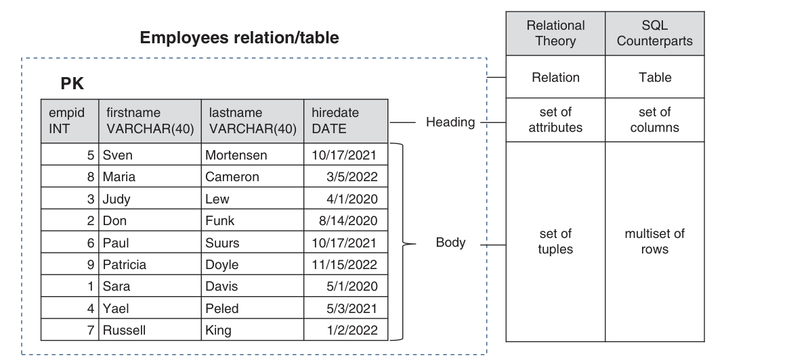
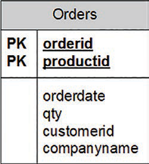
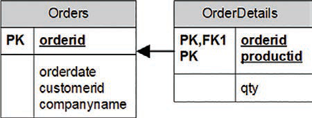
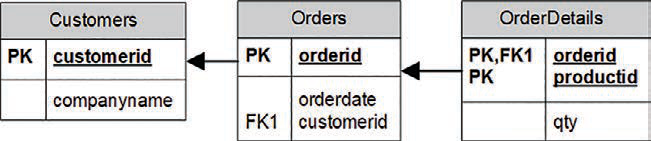
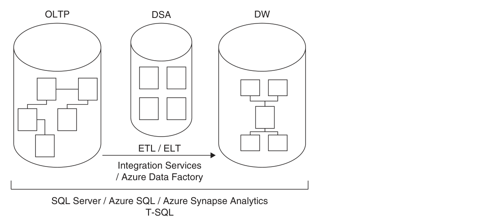
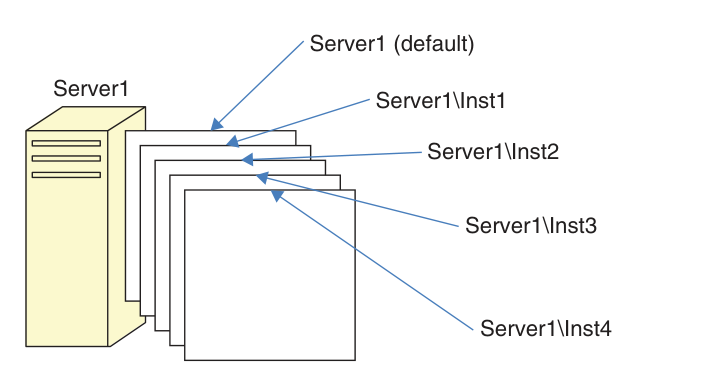
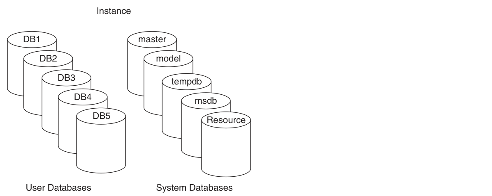
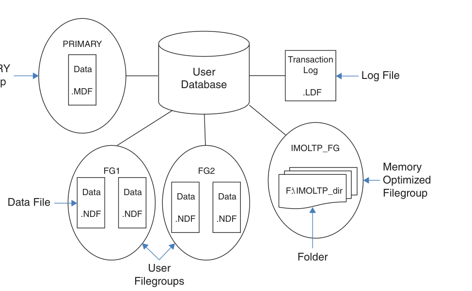
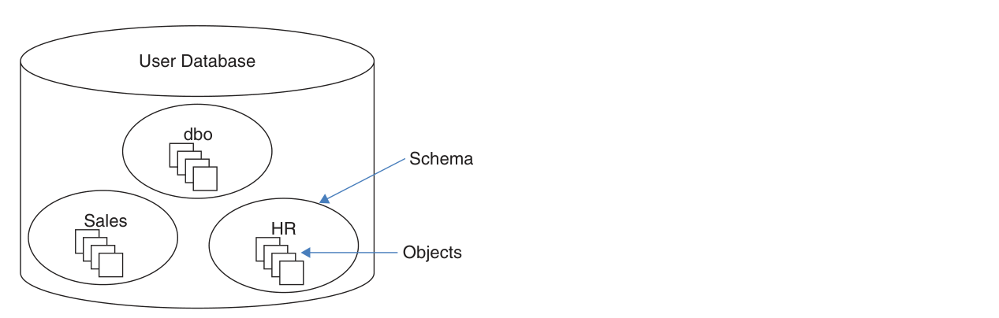

The big picture
Chapter 1 doesn’t teach you a single query. It gives you the mental model that makes every later query make sense. Ben-Gan builds the chapter in three layers.
Sets + logic
SQL stands on two branches of mathematics: set theory (collections of distinct things) and predicate logic (statements that are true or false). The relational model combines them.
Instance → database → schema → object
SQL Server is a stack. Knowing the stack explains names like Sales.Orders and tells you where your tables actually live.
Create a table, protect its data
The chapter ends with real T-SQL: CREATE TABLE plus primary keys, unique constraints, foreign keys, check constraints, and defaults.
The theory underneath SQL
Before learning syntax, the book explains what SQL is, where it came from, and the two mathematical ideas it is built on.
SQL in 60 seconds p. 2
- SQL stands for Structured Query Language. It is an ANSI/ISO standard for querying and managing data in relational database management systems (RDBMSs).
- It is declarative, not imperative: you describe what result you want, not how to compute it. SQL Server’s optimizer decides the physical steps.
- T-SQL is Microsoft’s dialect/extension of SQL. It runs on SQL Server, Azure SQL Database, Azure SQL Managed Instance, and Azure Synapse Analytics.
- Statement families: DDL (
CREATE,ALTER,DROP), DML (SELECT,INSERT,UPDATE,DELETE,TRUNCATE,MERGE), and DCL (GRANT,REVOKE). This book focuses on DML.
SELECT is DML, not a separate category. And TRUNCATE is DML, not DDL — even though it sounds like a structural change.
Set theory: a table is a set p. 3
Cantor’s definition of a set is a collection of distinct, well-defined objects, viewed as a whole. Three words in that definition do all the work:
Think of the collection, not the individual items. A table of employees is one set of employees.
No duplicates. A table without a key can hold duplicate rows, which makes it a multiset (bag), not a set.
There is no guaranteed row order. ORDER BY is only for presentation.
Columns are identified by name, not by position. Rows are identified by their key values, not by position. This is why a key is not optional in a well-designed table.
Predicate logic: true, false, or unknown p. 4
A predicate is an expression that is either true or false. The relational model uses predicates in two ways:
- For integrity: a constraint such as
salary > 0rejects rows that violate the rule. - For filtering: a query filter such as
department = 'sales'returns only matching rows.
SQL uses three-valued logic: TRUE, FALSE, and UNKNOWN. A comparison involving a missing value yields UNKNOWN. That missing value is represented by NULL — a marker, not a value. Codd actually proposed two different markers for “missing but applicable” and “missing but inapplicable”; SQL uses one NULL for both.
NULL means “the value is missing.” It is not a value, so it has no data type of its own and it never equals anything — not even another NULL.
The relational model p. 5
Dr. Edgar F. Codd created the relational model in 1969–1970, building on set theory and predicate logic. Its goal: represent data consistently, with minimal redundancy, while enforcing integrity as part of the model.
- A relation is a set of related information. In SQL, the counterpart is a table (close, but not an exact match).
- A relation has a heading (a set of attributes/columns, each with a name and a type) and a body (a set of tuples/rows).
- One relation represents one set — for example,
Customers. Operations on relations produce relations, which is what lets you nest relational expressions. - Propositions are statements that must be true or false. True propositions become rows; false ones simply don’t appear. This is the closed-world assumption.
- Types constrain which values are allowed.
INTis the set of integers in a specific range;DATEis the set of valid dates. A type is a simple form of predicate.

Illustration of the Employees relation
What you’re looking at: the same thing described in two languages. On the left, relational theory calls it a relation with a heading (a set of attributes) and a body (a set of tuples). On the right, SQL calls it a table with columns and rows. The PK marker shows that empid is the primary key.
Relations, keys, and the rules that keep data honest
A table is only useful if you can identify its rows and trust its values. That is the job of keys and constraints.
| Key / constraint | What it does | How many per table |
|---|---|---|
| Candidate key | One or more columns whose values uniquely identify a row. A table can have several. | Many possible |
| Primary key | The candidate key you choose as the preferred identifier. Enforces uniqueness and disallows NULLs. | Exactly one |
| Alternate key | Another candidate key, enforced with a UNIQUE constraint. | Many possible |
| Foreign key | Points to a candidate key in another (or the same) table. Restricts values to those that exist in the referenced key. | Many possible |
Every row is identifiable
The primary key guarantees that each row has a unique, known identity. SQL Server enforces it with a unique index behind the scenes.
Every reference points somewhere real
A foreign key guarantees that a value in the referencing table exists in the referenced table. You can’t have an order for an employee who doesn’t exist.
empid) and enforce the other with a unique constraint (say, ssn). The second one is an alternate key.
Constraints are part of the model p. 8
One of the relational model’s biggest benefits is that integrity is defined in the model and enforced by the RDBMS. That is called declarative data integrity. Enforcing rules in stored procedures or triggers instead is procedural data integrity — the book recommends the declarative route whenever possible.
Besides keys, the chapter mentions check constraints (a row must satisfy a predicate) and default constraints (a value used when none is supplied). You’ll write both in the code section below.
Normalization: stop repeating yourself
Normalization is a formal process for making sure each entity is represented by a single relation, with minimal redundancy and no update anomalies. The chapter walks through the first three normal forms.
Unique rows, atomic columns
Rows must be unique (enforce with a primary key or unique constraint), and columns should hold atomic values. “Atomic” depends on what the application needs to do with the data.
The whole key, not part of it
Meet 1NF, and every non-key column must depend on the entire candidate key — not just part of it. A column that depends only on part of a composite key is a 2NF violation.
Nothing but the key
Meet 2NF, and no non-key column may depend on another non-key column. All non-key columns must be mutually independent.
The book’s running example
Imagine an Orders table that mixes order information with order-line information:
-- One table doing two jobs (a 2NF violation)
-- Primary key is (orderid, productid)
Orders(orderid, productid, orderdate, qty, customerid, companyname)orderdate, customerid, and companyname depend only on orderid — part of the key. That violates 2NF. The fix is to split the table.

Data model before applying 2NF
What’s wrong: the primary key is (orderid, productid), but orderdate, customerid, and companyname depend only on orderid. One table is trying to represent both orders and order lines.

Data model after applying 2NF and before 3NF
What changed: the design is split into Orders (orderid, orderdate, customerid, companyname) and OrderDetails (orderid, productid, qty). Every non-key column now depends on the whole key. But customerid and companyname still depend on each other, so 3NF is not met yet.

Data model after applying 3NF
The final fix: add a Customers relation (customerid → companyname) and remove companyname from Orders. Now every non-key column depends on the key, the whole key, and nothing but the key.
OLTP vs. data warehouses
The same T-SQL language serves two very different jobs: recording transactions and analyzing history. They need opposite design choices.
| OLTP (online transactional processing) | Data warehouse (DW) | |
|---|---|---|
| Main job | Data entry: insert, update, delete | Reporting and analysis |
| Design | Normalized; one entity per table | Denormalized; fewer tables, intentional redundancy |
| Redundancy | Minimal | Intentional, for simpler queries |
| Typical shape | Many related tables | Star schema: dimension tables + a fact table |
| Reads | Simple, but often need many joins | Designed for efficient analysis |
| Platform | SQL Server / Azure SQL (SMP) | SQL Server / Azure SQL (SMP) or Azure Synapse Analytics (MPP) |

Classes of database systems
What you’re looking at: the two workloads on the left, the Microsoft platforms on the right, and the transformation process in the middle. ETL/ELT means extract, transform, load (or extract, load, transform). The DSA is a data-staging area used for cleansing. Tools include SSIS and Azure Data Factory.
Dimensions + facts
Dimension tables describe who/what/when — customers, products, employees, time. The fact table holds measures such as quantity and value for each combination of dimension keys. Data is often pre-aggregated (for example, by day).
Normalized dimensions
If you normalize a dimension into several related tables, you get a snowflake schema. A star schema is a special case of a snowflake schema.
How SQL Server is put together
The chapter now zooms out from theory to the physical and logical stack: flavors of SQL Server, instances, databases, files, and schemas.
On-premises vs. cloud p. 13
You own the box
Microsoft SQL Server installed on your hardware. You handle the hardware, OS, patching, high availability, disaster recovery, and security. You can install multiple instances and query across databases.
Microsoft owns the platform
Azure SQL Database, Azure SQL Managed Instance, and SQL Server on Azure VM. Microsoft handles the hardware and platform; you still handle index and query tuning. The cloud releases features faster than the on-premises product.
Azure SQL is a collective name for three offerings: Azure SQL Database, Azure SQL Managed Instance, and SQL Server on Azure VM. Managed Instance is the closest to on-premises parity; Azure SQL Database does not support cross-database (three-part-name) queries.
Instances p. 15
An instance is an installation of the SQL Server database engine. One computer can host several independent instances. They share physical resources (CPU, memory, disk) but are logically isolated — different security, different data.
- One instance can be the default instance; the others must be named instances. This choice is made at installation and cannot be changed later.
- Connect to the default with just the computer name:
Server1. - Connect to a named instance with a backslash:
Server1\Inst1.

Multiple instances of SQL Server on the same computer
What you’re looking at: one physical server (Server1) with a default instance plus named instances Inst1–Inst4. Each is independent at the logical level. Historically, this saved support costs by letting one machine mimic several environments.
Databases p. 16
A database is a container of objects such as tables, views, and stored procedures. Each instance can hold many databases. Setup creates five system databases; you then create your own user databases (up to 32,767 per instance).
| System database | What it holds |
|---|---|
| master | Instance-wide metadata, server configuration, and information about all databases. |
| model | The template for new databases. Changes here affect only databases created later. |
| tempdb | Temporary data: work tables, sort/hash data, row versioning. Recreated as a copy of model on every restart. |
| msdb | SQL Server Agent data: jobs, schedules, alerts, replication, backups, Database Mail, Service Broker. |
| Resource | A hidden, read-only database holding the definitions of all system objects. |
Collation is a database-level property that controls language support, case sensitivity, and sort order for character data. If you don’t specify one, the instance default is used.

An example of multiple databases on a SQL Server instance
What you’re looking at: one instance containing the five system databases and five user databases (DB1–DB5). Your application tables live in user databases, not in master or tempdb.
The physical layout: files and filegroups p. 18
- Data files hold object data: the primary data file (extension
.mdf) and optional secondary data files (.ndf). - Transaction log files (extension
.ldf) hold the information SQL Server needs to maintain transactions. Log writes are sequential — only one log file is written at a time. - Filegroups are logical groups of data files. A database must have a
PRIMARYfilegroup; it can also have user filegroups. A filegroup is the target for creating an object such as a table or index. - In-Memory OLTP can add a memory-optimized filegroup with a folder for checkpoint files.
On SQL Server (including SQL Server on Azure VM) you manage these physical files. On Azure SQL Database and Azure SQL Managed Instance, you only deal with the logical layer.

Database layout
What you’re looking at: a database made of a PRIMARY filegroup (data files .mdf/.ndf), optional user filegroups (FG1, FG2), a transaction log (.ldf), and — optionally — a memory-optimized filegroup with a folder for checkpoint data.
Schemas and objects p. 19
A database contains schemas, and schemas contain objects. A schema is both a container and a namespace. You can grant permissions at the schema level, and you use the schema name as a prefix to the object name.
| Name | Example | What it refers to |
|---|---|---|
| Two-part name | Sales.Orders | Object in a schema (recommended) |
| Three-part name | TSQLV6.Sales.Orders | Object in another database |
| Four-part name | Server1.TSQLV6.Sales.Orders | Object in another instance |
dbo. If two schemas contain an object with the same name, you might get a different object than you intended.

A database, schemas, and database objects
What you’re looking at: the containment hierarchy. A user database contains schemas (dbo, Sales, HR), and each schema contains objects such as tables. dbo is created automatically in every database.
Create tables and define data integrity
The last part of the chapter is the practical payoff: the exact T-SQL used to create a table and add declarative constraints. Run the samples in order in the book’s TSQLV6 sample database.
dbo.Employees, then adds keys and constraints to it, creates dbo.Orders, and finishes with cleanup. The copy buttons copy the code exactly as shown.
1. Create the Employees table p. 21
USE TSQLV6;
DROP TABLE IF EXISTS dbo.Employees;
CREATE TABLE dbo.Employees
(
empid INT NOT NULL,
firstname VARCHAR(30) NOT NULL,
lastname VARCHAR(30) NOT NULL,
hiredate DATE NOT NULL,
mgrid INT NULL,
ssn VARCHAR(20) NOT NULL,
salary MONEY NOT NULL
);USE TSQLV6;sets the current database context. Keeping it in scripts guarantees the objects are created in the intended database.DROP TABLE IF EXISTSmakes the script repeatable: it removes an existing table before creating a fresh one.- Each column has a name, a data type, and nullability.
NOT NULLmeans a value is required;NULLallows a missing value. mgridis nullable on purpose: aNULLmeans the employee has no manager (for example, the CEO).
NOT NULL unless you have a compelling reason to allow NULLs.
2. Add a primary key p. 23
ALTER TABLE dbo.Employees
ADD CONSTRAINT PK_Employees
PRIMARY KEY(empid);A primary key enforces uniqueness and disallows NULLs. Each table can have only one. SQL Server creates a unique index behind the scenes as the physical mechanism for enforcing it. An attempt to insert or update a duplicate empid is rejected.
3. Add a unique constraint (alternate key) p. 23
ALTER TABLE dbo.Employees
ADD CONSTRAINT UNQ_Employees_ssn
UNIQUE(ssn);A unique constraint enforces uniqueness like a primary key, but you can define several per table, and the column does not have to be NOT NULL. It implements the relational model’s alternate keys.
NULL like any other value for uniqueness, so a single-column unique constraint allows only one NULL. The SQL standard compares only non-NULL values, so it would allow many NULLs. To emulate the standard, use a filtered unique index (next block).
4. Emulate a standard unique constraint with a filtered index p. 24
CREATE UNIQUE INDEX idx_ssn_notnull
ON dbo.Employees(ssn)
WHERE ssn IS NOT NULL;The filter excludes NULLs from the index. Duplicate NULLs are allowed in the table, but duplicate non-NULL values are not. This is the SQL Server workaround for the standard’s NULL handling.
5. Create the Orders table p. 24
DROP TABLE IF EXISTS dbo.Orders;
CREATE TABLE dbo.Orders
(
orderid INT NOT NULL,
empid INT NOT NULL,
custid VARCHAR(10) NOT NULL,
orderts DATETIME2 NOT NULL,
qty INT NOT NULL,
CONSTRAINT PK_Orders
PRIMARY KEY(orderid)
);Here the primary key is defined inline, as part of CREATE TABLE. You can add constraints either at creation time or later with ALTER TABLE.
6. Add a foreign key from Orders to Employees p. 24
ALTER TABLE dbo.Orders
ADD CONSTRAINT FK_Orders_Employees
FOREIGN KEY(empid)
REFERENCES dbo.Employees(empid);This enforces referential integrity: every empid in Orders must exist in Employees. The default referential action is NO ACTION, which rejects a delete or update that would leave orphaned rows.
7. Add a self-referencing foreign key p. 25
ALTER TABLE dbo.Employees
ADD CONSTRAINT FK_Employees_Employees
FOREIGN KEY(mgrid)
REFERENCES dbo.Employees(empid);A table can reference itself. Here mgrid must point to an existing empid in the same table — the manager must also be an employee. NULL is still allowed in the foreign-key column, which is how the CEO is represented.
ON DELETE and ON UPDATE actions such as CASCADE, SET DEFAULT, and SET NULL. CASCADE propagates the delete or update to related rows; SET NULL clears the foreign key; SET DEFAULT assigns the column’s default.
8. Add a check constraint p. 25
ALTER TABLE dbo.Employees
ADD CONSTRAINT CHK_Employees_salary
CHECK(salary > 0.00);A check constraint defines a predicate that a row must satisfy. Here salaries must be positive. The database rejects an insert or update only when the predicate evaluates to FALSE; it accepts TRUE or UNKNOWN. So -1000 is rejected, while 50000 and NULL (if allowed) are accepted.
WITH NOCHECK tells SQL Server to skip validation of existing data. The book calls this a bad practice because you can no longer be sure the data is consistent.
9. Add a default constraint p. 26
ALTER TABLE dbo.Orders
ADD CONSTRAINT DFT_Orders_orderts
DEFAULT(SYSDATETIME()) FOR orderts;A default supplies a value when an insert doesn’t specify one. SYSDATETIME() returns the current date and time. After this, inserting an order without an orderts value fills it in automatically.
10. Clean up p. 26
DROP TABLE IF EXISTS dbo.Orders, dbo.Employees;Remove the sample objects when you’re done. Drop Orders first (or together, as shown) because it references Employees.
TSQLV6. Then try inserting a duplicate empid, an order with a non-existent employee, or a negative salary — the database should reject each one. That is declarative integrity doing its job.
Chapter 1 in ten bullets
- SQL is declarative. You specify the result you want; the optimizer decides how to compute it.
- T-SQL is Microsoft’s dialect of SQL and runs on SQL Server, Azure SQL, and Azure Synapse Analytics.
- A table is a set of rows. Rows are distinct and unordered; keys provide identity, and
ORDER BYprovides presentation order. - Predicates are true, false, or unknown.
NULLis a marker for a missing value, not a value. - The relational model (Codd) combines set theory and predicate logic. A relation has a heading of attributes and a body of tuples.
- Keys protect integrity: a candidate key identifies rows, a primary key is the chosen one, and a foreign key enforces references.
- Normalization removes redundancy: 1NF (unique, atomic), 2NF (the whole key), 3NF (nothing but the key).
- OLTP and data warehouses are different animals: normalized entry systems vs. denormalized star-schema reporting systems, connected by ETL/ELT.
- The architecture stack is instance → databases → schemas → objects. Use two-part names like
Sales.Orders. - Constraints are code that protects data: primary key, unique, foreign key, check, and default — all declarative.
Key terms in plain English
- Relation
- A set of related information; the relational-model counterpart of a SQL table.
- Tuple
- One row in a relation; one record in a table.
- Attribute
- A column in a relation; has a name and a type.
- Heading / body
- The columns of a relation (heading) and its rows (body).
- Predicate
- An expression that evaluates to true or false; used for filters and constraints.
- NULL
- A marker for a missing value. Not a value; comparisons with it yield UNKNOWN.
- Candidate key
- One or more columns that uniquely identify a row.
- Primary key
- The chosen candidate key; unique and NOT NULL; one per table.
- Foreign key
- Column(s) that reference a candidate key in another (or the same) table.
- Normalization
- A formal process to reduce redundancy and avoid update anomalies.
- OLTP
- Online transactional processing: systems optimized for data entry.
- Data warehouse
- A reporting-oriented database, often using a star schema.
- Star schema
- Dimension tables plus a central fact table of measures.
- ETL / ELT
- Extract, transform, load (or extract, load, transform) — moving data into a warehouse.
- Instance
- An installation of the SQL Server database engine; a computer can host several.
- Schema
- A container and namespace for database objects, such as
dboorSales. - Collation
- A database setting controlling language support, case sensitivity, and sort order.
- Filegroup
- A logical group of data files that controls where objects are stored.
Six quick questions
Try to answer before opening each one. If you can explain it in your own words, you’ve got the chapter.
Why does the book say a table without a key is not a set?
What is the difference between DDL and DML?
CREATE, ALTER, DROP. DML queries and modifies data: SELECT, INSERT, UPDATE, DELETE, TRUNCATE, MERGE. SELECT is DML, and TRUNCATE is DML — not DDL.State third normal form in one sentence.
What does a foreign key protect?
Why does the book recommend two-part object names?
dbo). If the same object name exists in multiple schemas, you might get a different object than intended. Sales.Orders is unambiguous.